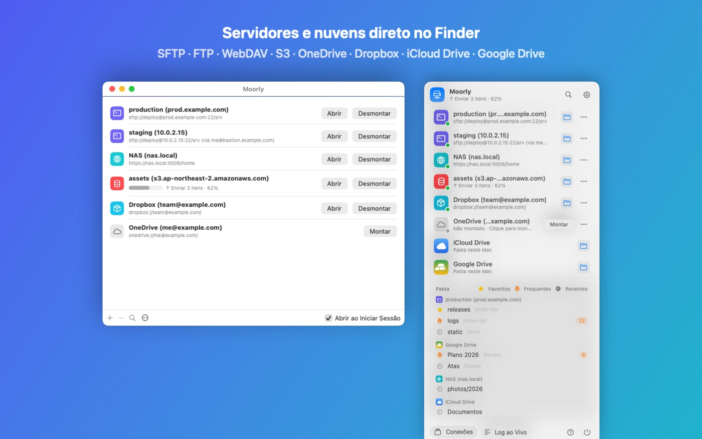
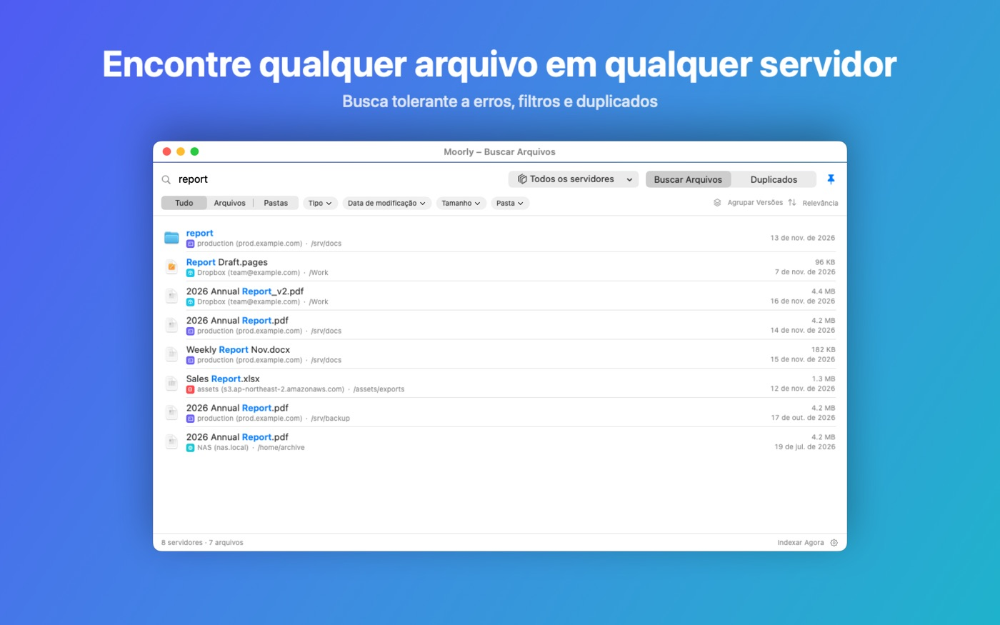
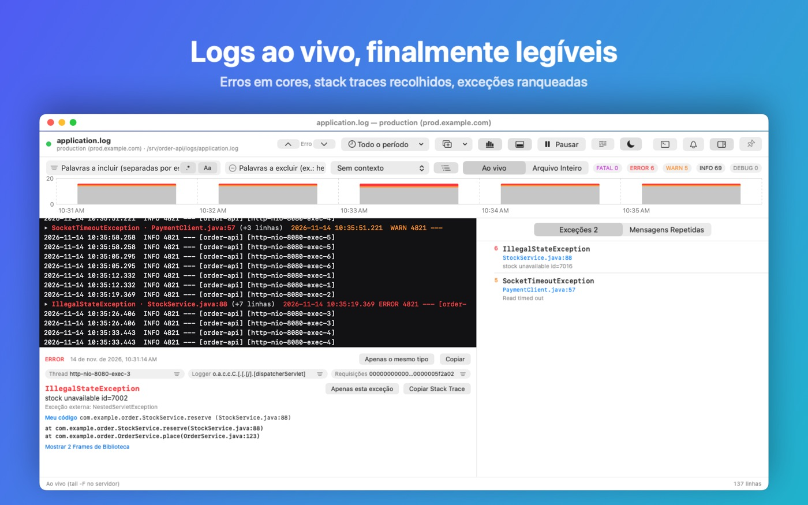

Guia do Usuário do Moorly
O Moorly coloca servidores SFTP, FTP, WebDAV e S3, o OneDrive e o Dropbox na barra lateral do Finder para que você possa abrir e salvar arquivos como se estivessem no seu Mac. Ele também funciona com pastas que já estão no seu Mac, como o iCloud Drive ou a pasta do app Google Drive.
Primeiros passos

- Clique no ícone do Moorly na barra de menus e abra Conexões.
- Clique em + (⌘N) e escolha um serviço.
- Servidores (SFTP, FTP, WebDAV, S3): digite o endereço, o nome de usuário e a senha ou chave e clique em Testar Conexão e Salvar.
Nuvens (OneDrive, Dropbox): clique em Iniciar Sessão com Microsoft (ou Dropbox)…. A página de início de sessão é aberta no navegador. Depois de iniciar a sessão e permitir o acesso, clique em Abrir quando o navegador perguntar se deseja abrir o Moorly, verifique o nome e clique em Salvar. - Clique em Montar na lista. A conexão aparece em Localizações na barra lateral do Finder.
~/.ssh/config. Servidores SFTP são verificados na primeira vez que você monta.Dicas de SFTP
- Use Importar de ~/.ssh/config… para reaproveitar os ajustes de host existentes.
- Se precisar passar por um host intermediário, digite-o em Avançado › Host intermediário (jump host).
- Quando você monta a raiz do servidor (
/),/proce/sysficam ocultas (são pastas virtuais que mudam constantemente).
Painel da barra de menus
Clique no ícone do Moorly na barra de menus para abrir o painel. (Clicar com a tecla Control ou ⌥ pressionada abre um menu rápido: conexões, buscar arquivos, transferências e sincronização, log ao vivo, ajustes, ajuda e encerrar.)
- Servidores: o ponto em cada ícone mostra o estado — verde, montado; laranja, há um problema; cinza, não montado. Clique em uma linha para abrir a última pasta visualizada. … oferece Desmontar, Atualizar, Analisar Uso do Disco, Abrir no Terminal e mais.
- Pastas: para cada servidor, ★ Favoritos · 🔥 Frequentes · 🕘 Recentes. Mantenha o cursor sobre uma pasta e clique em ☆ para adicioná-la ou removê-la dos favoritos.
- Frequentes lista as pastas que você abriu pelo menos duas vezes nos últimos 30 dias, das mais abertas para as menos abertas. Defina quantas mostrar por servidor em Ajustes › Menu.
- As pastas abertas pelo Moorly mantêm o histórico, então o botão ◀ (Voltar) do Finder e ⌘↑ levam você à pasta que as contém.
- Transferências: clique em ⇅ no topo do painel (ou em Transferências… no menu de contexto) para ver envios e downloads, com progresso, motivo das falhas, Tentar Novamente e Pausar por servidor. As transferências concluídas somem após o período definido em Ajustes › Histórico de transferências (1 dia por padrão); as que falharam ficam por até 7 dias.
- Sincronização de Pastas: no menu … de um servidor ou em Sincronização de Pastas… no menu de contexto, compare uma pasta do Mac com uma do servidor e transfira só o que mudou. Comparar mostra antes uma prévia; arquivos alterados à parte no destino aparecem como conflito em vez de serem sobrescritos. No Finder, clique com a tecla Control em uma pasta de um servidor montado › Moorly: Sincronizar Esta Pasta… para abrir com o servidor e a pasta já preenchidos; basta escolher a pasta do Mac. Também pelo botão Sincronizar na parte de baixo do painel.
Muitos servidores: árvore e abas
Em Ajustes › Painel da barra de menus › Visualização, escolha Lista, Árvore ou Abas.
- Grupos: defina um grupo (por exemplo, Produção ou Desenvolvimento) no campo Grupo do editor de conexão ou em … › Grupo no servidor. Servidores sem grupo são agrupados automaticamente em Servidor (SFTP, FTP, WebDAV) e Nuvem (S3, OneDrive, Dropbox); pastas locais têm seu próprio grupo.
- Árvore: recolha e expanda grupos e servidores com ▸. Ao expandir um servidor, as pastas favoritas, frequentes e recentes dele aparecem logo abaixo. O estado fica salvo.
- Abas: clique em uma aba no topo (Tudo ou um grupo) para ver só os servidores e pastas desse grupo.
- Com 9 ou mais servidores e pastas locais, aparece no topo o campo Filtrar por nome do servidor. Se a lista for maior que a tela, ela rola dentro do painel.
Arrastar para enviar
Quando você pega um arquivo no Finder, uma pequena área “Enviar com o Moorly” aparece abaixo do ícone da barra de menus. Arraste o arquivo até ela para ver as pastas de cada servidor.
- Solte em uma pasta para enviar o arquivo para ela. Se já existir um arquivo com o mesmo nome, o Moorly mantém os dois (“nome 2”).
- Solte no título de um servidor para escolher onde enviar.
- Para mostrar a lista completa imediatamente, altere Ajustes › Painel de Arraste › Estilo.
Pastas locais (iCloud Drive · Google Drive · Box · pastas compartilhadas)
Trabalhe com pastas que já estão no seu Mac como se fossem servidores. Elas aparecem em Recentes, Frequentes e Favoritos, aceitam arquivos soltos e são incluídas na busca de arquivos.
- Clique em Ajustes › Pastas Locais › Adicionar Pasta…
- Escolha a pasta e clique em Adicionar Esta Pasta. (Por segurança, o macOS exige que você escolha cada pasta uma vez.)
| Para adicionar | Escolha |
|---|---|
| iCloud Drive | O botão Adicionar iCloud Drive… (ou ~/Library/Mobile Documents/com~apple~CloudDocs) |
| Google Drive | Instale o app Google Drive e escolha ~/Library/CloudStorage/GoogleDrive-sua-conta |
| Box · pCloud · MEGA | Instale o app e escolha a pasta que ele cria (normalmente dentro de ~/Library/CloudStorage) |
| Pasta compartilhada da empresa (SMB) | Conecte-se no Finder com Ir › Conectar ao Servidor e escolha /Volumes/nome-do-compartilhamento |
Menu de atalhos do Finder
Clique com a tecla Control pressionada em um arquivo ou pasta dentro de um servidor montado com o Moorly para ver os itens Moorly:.
| Item | Seleção | O que faz |
|---|---|---|
| Mostrar Log ao Vivo | 1 arquivo | Acompanha o log no servidor, como tail -F |
| Buscar o Mesmo Arquivo | 1 arquivo | Encontra arquivos com o mesmo conteúdo nos seus servidores |
| Abrir no Terminal | 1 item | Uma sessão ssh nessa pasta (SFTP) |
| Analisar Uso do Disco | 1 pasta | Mostra quais pastas e arquivos ocupam espaço |
| Adicionar aos Favoritos | 1 pasta | Adiciona a ★ no painel da barra de menus |
| Copiar Link de Compartilhamento | 1 item | Um link de compartilhamento para S3, OneDrive ou Dropbox |
| Comprimir como tar.gz/zip, Descomprimir, Duplicar no Servidor | 1 ou mais | Executado no servidor, sem baixar (SFTP) |
| Manter Sempre neste Mac / Parar de Manter | 1 ou mais | Baixa antes e acompanha as mudanças do servidor, então abre mesmo sem conexão com o servidor. Em uma pasta, vale para todo o conteúdo |
Se uma ação não estiver disponível para o tipo de servidor, o Moorly explica o motivo.
Cofres do Cryptomator (pastas criptografadas)
Os arquivos são criptografados neste Mac antes de serem enviados. O servidor guarda apenas nomes e conteúdos ilegíveis, então nem seu provedor de nuvem, nem o administrador do servidor, nem quem roubar sua conta consegue vê-los. Os cofres usam o formato padrão do Cryptomator, por isso os apps do Cryptomator (Windows, iPhone, Android) abrem o mesmo cofre.
- No painel, clique em … ao lado de um servidor › Cofre do Cryptomator… (ou … › Abrir ou Criar Cofre do Cryptomator… na janela de conexões).
- Abrir Cofre Existente: informe a pasta do cofre (a que contém
vault.cryptomator) e a senha. Criar Cofre Novo: informe uma pasta e uma senha de pelo menos 8 caracteres. - O cofre aparece no Finder como uma conexão própria, marcado com 🔒 na barra lateral e com um cadeado nos ícones das pastas e arquivos. Dentro dele, abra e salve arquivos como em qualquer pasta.
- Nomes e conteúdos ficam ocultos. A quantidade de arquivos, o tamanho aproximado e as datas de modificação continuam visíveis no servidor.
- Dentro de um cofre não há compactação no servidor, links de compartilhamento nem logs em tempo real (o servidor não consegue ler os arquivos).
- Compatível com: cofres do Cryptomator formatos 7 e 8, com AES-GCM (padrão desde o Cryptomator 1.7) ou AES-CTR+HMAC (cofres antigos). Cofres criados com versões antigas do Cryptomator abrem e funcionam como estão.
- Bloquear: no painel, … ao lado do cofre › Bloquear Cofre. Ele é desmontado e a chave é removida deste Mac; a senha será pedida na próxima vez. Em Ajustes › Cofre do Cryptomator, você pode bloquear os cofres automaticamente quando a tela for bloqueada ou o Mac entrar em repouso.
- Verificar de novo diariamente: em um cofre, escolha … › Ao reabrir › Bloquear diariamente e desbloquear com o Touch ID. Ele é bloqueado um dia depois de desbloqueado e, na próxima vez, abre só com a sua digital. Em Macs sem Touch ID, é usada a senha de login do Mac (ou o Apple Watch). Com desbloquear com a senha do cofre, a senha do cofre é pedida toda vez.
- Alterar senha: … › Alterar Senha do Cofre…. Os arquivos não são criptografados de novo (só o arquivo de chave muda), então é instantâneo. Os apps do Cryptomator também passam a usar a nova senha. Com Apagar Backup da Senha Antiga ativado (padrão), a senha antiga não abre mais o cofre; se desativar, fica no servidor uma cópia (
masterkey.cryptomator.bkup) que abre com a senha antiga. - Chave de recuperação: aparece ao criar um cofre (depois: … › Mostrar Chave de Recuperação…). Se esquecer a senha, escolha Chave de recuperação em Alterar Senha do Cofre… para definir uma nova. É uma chave do Moorly, diferente da chave em palavras dos apps do Cryptomator.
- Apagar pastas em cofres no S3: O S3 não renomeia pastas em uma única etapa; se uma movimentação for interrompida, duas pastas podem apontar para o mesmo conteúdo. Para que apagar uma delas nunca faça perder arquivos, apagar uma pasta em um cofre no S3 remove apenas a pasta; o conteúdo criptografado permanece no servidor. Por isso, apagar pastas não reduz o espaço (nem o custo) do S3. O conteúdo restante está criptografado e ninguém consegue lê-lo.
- O que o bloqueio apaga: Ao bloquear, os registros deste Mac que contêm nomes de arquivos (índice de busca, pastas recentes, histórico de transferências, dados de sincronização) são apagados. Seus ajustes (favoritos, Sempre Manter Neste Mac, tarefas de sincronização) permanecem; os favoritos ficam ocultos enquanto o cofre estiver bloqueado.
Busca de arquivos

Clique em 🔍 no painel da barra de menus ou pressione ⌃⌥⌘F em qualquer lugar. Encontra arquivos pelo nome mesmo em pastas que você ainda não abriu.
- Tolera espaços e erros de digitação.
- Filtre com Tudo / Arquivos / Pastas abaixo do campo de busca e por tipo, data, tamanho ou pasta.
- Condições:
ext:pdfsize:>100mbkind:folderfolder:/var/logserver:proddate:week - A aba Duplicados encontra o mesmo arquivo em vários servidores.
- Ative 📌 no canto superior direito para manter a janela acima dos outros apps.
- Escolha o que indexar em cada servidor em Ajustes › Buscar Arquivos. No SFTP e no FTP, pastas do sistema como
/usr,/proce/var/logsão ignoradas.
Logs ao vivo

Painel da barra de menus › Log ao Vivo › Abrir Arquivo de Log…, ou clique com a tecla Control pressionada em um arquivo › Moorly: Mostrar Log ao Vivo.
- Caminho ou Nome: digite um caminho como
/var/log/syslog, ou apenas um nome comoapp, e escolha na lista abaixo (os modificados mais recentemente aparecem primeiro). - Digite uma pasta para acompanhar o arquivo modificado mais recentemente nela e em suas subpastas. Quando aparece um arquivo mais novo (por exemplo, um novo log diário), o Moorly muda para ele em até 30 segundos. Você pode adicionar um nome:
/app/log/*api* - Escolha vários servidores para mesclar os logs deles por horário.
- Filtros, palavras excluídas, linhas de contexto, cores por nível, agrupamento de mensagens repetidas, gráfico de linha do tempo, pausa (⌘P), modo escuro 🌙 e manter acima 📌.
- 🔔 Monitorar: receba uma notificação do macOS para determinadas palavras ou picos de erros (continua funcionando depois que você fecha a janela).
tail -F no servidor, então as linhas aparecem quase imediatamente. Em contas que não podem executar comandos e em outros tipos de servidor, o Moorly lê os dados novos a cada 1,5 segundo.Terminal (iTerm2 · Terminal)
- Clique com a tecla Control pressionada em um servidor SFTP na lista de conexões › Abrir no iTerm2 (ou … no painel). Escolha o app em Ajustes › Terminal.
- Configurar Acesso sem Senha… cria uma chave SSH para este Mac (padrão
~/.ssh/moorly_ed25519) e adiciona uma linha de chave pública a~/.ssh/authorized_keysno servidor. Depois disso, o terminal não pede mais a senha.
Permissões — por que o macOS pergunta?
| O que o macOS pergunta | Por quê |
|---|---|
| “Moorly deseja controlar o Finder” | Para registrar as pastas recentes e frequentes, o Moorly verifica qual pasta a janela do Finder em primeiro plano está mostrando — somente enquanto o Finder está em primeiro plano, e ele nunca mexe nos seus arquivos. Para desativar: Ajustes › Menu › Registrar Pastas Abertas no Finder |
| “Moorly deseja controlar o iTerm2 (Terminal)” | Para enviar um comando ssh quando você abre um servidor no terminal. |
| Um seletor de pastas | Você escolhe exatamente quais pastas o Moorly pode usar, como pastas locais ou onde salvar uma chave SSH. |
| Notificações | Alertas do monitoramento de logs. |
Se você recusou, altere em Ajustes do Sistema › Privacidade e Segurança › Automação.
Gratuito e Pro
A versão gratuita inclui todos os recursos, com uma conexão de cada tipo (SFTP, FTP, WebDAV, S3, OneDrive, Dropbox), uma pasta local, um monitoramento de log e um cofre do Cryptomator. Uma compra única do Moorly Pro dentro do app remove esses limites: conexões, pastas locais, monitoramentos de log e cofres ilimitados.
Perguntas frequentes
Ao salvar uma conexão do OneDrive, aparece “Esta conta não tem um OneDrive”
A conta pessoal nunca abriu o OneDrive. Inicie sessão uma vez em onedrive.live.com no navegador e tente novamente. Contas corporativas ou de estudante precisam de uma licença do OneDrive (Microsoft 365).
Um servidor não aparece na barra lateral do Finder
No painel, clique em … ao lado do servidor › Mostrar na Barra Lateral do Finder…. Na janela do Finder que abrir, sem nada selecionado, escolha Arquivo › Adicionar à Barra Lateral. Depois de adicionado, ele permanece mesmo ao montar de novo. (Se você remover um item da barra lateral, o Finder se lembra e não o mostra mais.)
Minha conta Microsoft corporativa está bloqueada (“Aprovação do administrador necessária”)
Sua organização bloqueia apps externos. Peça ao administrador para aprovar o Moorly.
Aparece um aviso (⚠︎) na lista
Não foi possível acessar o servidor ou a sua sessão expirou. Escolha … › Tentar Novamente no painel ou clique no aviso para iniciar sessão novamente.
As pastas que abro no Finder não aparecem em Recentes
Verifique se o controle do Finder está permitido (consulte Permissões). Se o painel mostrar um aviso laranja, clique em Abrir Ajustes de Automação….
Não há itens do Moorly no menu de atalhos
Eles aparecem somente dentro de servidores montados com o Moorly, não em pastas locais como o iCloud Drive.
O SFTP por um host intermediário falha
O sshd do host intermediário precisa permitir o encaminhamento TCP (AllowTcpForwarding yes, o padrão). Para o host, digite o endereço como visto a partir do host intermediário.
Não recebo notificações do monitoramento de logs
Permita as notificações em Ajustes do Sistema › Notificações › Moorly.
Contato
Envie um e-mail para giveing7777@gmail.com ou abra uma issue no GitHub Issues informando a versão do macOS e o que aconteceu. Não inclua senhas nem endereços de servidores.